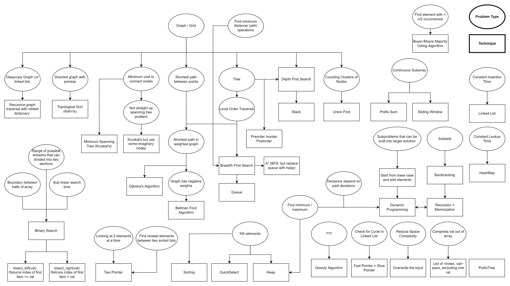

CLRS Algos
1 Problem Solving Heuristic

1.1 DP
- Count the number of ways
- Count number of ways to reach n-th step, taking {1,2} steps. (Fibonacci)
- Count number of ways to get sum n, selecting {1,2,3,4,5,6} any number of times.
2 Recursion vs Tail-recursion
We will not refer to tail-recursion as recursion.
tail-recursion can store state and is isomorphic to iterative solutions.
3 Recursion vs DP
Although we can always go from recursion TO DP, they are not the same.
Problems that require us to FIRST store local optimas work well with DP but not recursion.
Recursion has no memory.
4 Generative
- Typically problems that ask to find all possible combinations that fulfils some constraint or target
- We create a generative tree of states using a tail recursive function
mylist = input()
solutionSet = []
def func(target,buildsol,mylist...):
if target == 0: #constraint satisfied
solutionSet.append(buildsol)
if target <= 0:
return #backtrack
for i in mylist:
func(target-i,buildsol+[i],mylist...)4.0.1 Examples
- problem: Sorting => IH: Sorted
- Strengthen Problem : Quick Sort
- Strengthen problem from Sorting to placing a chosen pivot in the correct sorted position
- Must do this for all pivots
- Split : Mergesort
- Atomic: BubbleSort
- place head into correct position of IH(tail)
- Strengthen Problem : Quick Sort
- problem: Longest Common Subsequence
- Recursive, Atomic
X = ["A","B","C","B","D","A","B"]
Y = ["B","D","C","A","B","A"]
m = len(X)+1 #
n = len(Y)+1 #
b = [[ " " for row in range (0,n)] for col in range(0,m)] #
c = [[ -1 for row in range (0,n)] for col in range(0,m)] #
for i in range(1,m):
c[i][0] = 0
for j in range(0,n):
c[0][j] = 0
for i in range(1,m):
for j in range(1,n):
if X[i-1] == Y[j-1]: # X[i] == Y[j] in CLRS
c[i][j] = c[i-1][j-1]+1
b[i][j] = "D"
elif c[i-1][j] >= c[i][j-1]:
c[i][j] = c[i-1][j]
b[i][j] = "U"
else:
c[i][j] = c[i][j-1]
b[i][j] = " "
def printMat(lst):
for i in lst:
print(i)
printMat(c)
# [0, 0, 0, 0, 0, 0, 0]
# [0, 0, 0, 0, 1, 1, 1]
# [0, 1, 1, 1, 1, 2, 2]
# [0, 1, 1, 2, 2, 2, 2]
# [0, 1, 1, 2, 2, 3, 3]
# [0, 1, 2, 2, 2, 3, 3]
# [0, 1, 2, 2, 3, 3, 4]
# [0, 1, 2, 2, 3, 4, 4]
printMat(b)
# [' ', ' ', ' ', ' ', ' ', ' ', ' ']
# [' ', 'U', 'U', 'U', 'D', ' ', 'D']
# [' ', 'D', ' ', ' ', 'U', 'D', ' ']
# [' ', 'U', 'U', 'D', ' ', 'U', 'U']
# [' ', 'D', 'U', 'U', 'U', 'D', ' ']
# [' ', 'U', 'D', 'U', 'U', 'U', 'U']
# [' ', 'U', 'U', 'U', 'D', 'U', 'D']
# [' ', 'D', 'U', 'U', 'U', 'D', 'U']def printLCS(b,X,i,j):
if i == 0 or j == 0:
return
if b[i][j] == "D":
printLCS(b,X,i-1,j-1)
print(X[i-1]) #X[i] in CLRS
elif b[i][j] == "U":
printLCS(b,X,i-1,j)
else:
printLCS(b,X,i,j-1)
printLCS(b,X,len(X),len(Y))
#> BCBA4.0.1.0.1 Insertion Sort
- Sublist [{0..i,j}…]
- IH : [0..i] is Sorted sublist
- insert A[j] or Key into proper position in IH : [0..i]
def InsertionSort(A):
for j in range(1,len(A)):
key = A[j]
i = j - 1
while i >= 0 and A[i] > key:
A[i+1] = A[i]
i = i - 1
A[i+1] = key
A=[5,2,4,6,1,3]
InsertionSort(A)
print(A)def trace(func):
separate = "| "
trace.recursionDepth = 0
@wraps(func)
def trace_helper(*args, **kwargs):
print(f'{separate * trace.recursionDepth}|--> {func.__name__}({", ".join(map(str, args))})')
trace.recursionDepth += 1
output = func(*args,**kwargs)
trace.recursionDepth -= 1
print(f'{separate * (trace.recursionDepth + 1)}|--> return {output}')
return output
return trace_helperdef insert(X,k):
partition = len(X)
for i in range(0,len(X)):
if k < X[i]:
partition = i
break
fstpart = X[:partition]
sndpart = X[partition:]
return fstpart + [k] + sndpart
@trace
def Insertsort(A,i,j):
if j == len(A)-1:
return A
else:
sublist = A[i:j]
IH = insert(sublist,A[j])
newA = IH + A[j+1:]
Insertsort(newA,i,j+1) #<-- fix this, we need to return
Insertsort([1,8,3,5],0,0)
# |--> Insertsort([1, 8, 3, 5], 0, 0)
# | |--> Insertsort([1, 8, 3, 5], 0, 1)
# | | |--> Insertsort([1, 8, 3, 5], 0, 2)
# | | | |--> Insertsort([1, 3, 8, 5], 0, 3)
# | | | | |--> return [1, 3, 8, 5]
# | | | |--> return None
# | | |--> return None
# | |--> return None
#where is the problem?5 Reverse Linked List
class ListNode(object):
def __init__(self, val=0, next=None):
self.val = val
self.next = None
a = ListNode(val=2)
a.next = ListNode(val=5)
a.next.next = ListNode(val=9)
def f(x):
if x == None:
return x
if x.next == None:
return (x,x)
else:
IH_h,IH_l = f(x.next)
IH_l.next = x
x.next = None
return (IH_h,x)
print(a.next.val)
print(f(a)[0].next.next.val)Explanation
We want to reverse the ordering of a linkedlist. access is always left to right.
INPUT
[x] ——> access
——–> ordering
GOAL
——->[x] access
<——- ordering
Arrow only symbolizes ordering NOT connection.
naive IH: simply returns head of the reversed linkedlist.
Naive Sol:
[x]
[IH]——> access
<——— ordering
What do we do with x?
We need to put x to the end of this reversedlist.
[IH]——>[x] access
We could recursively “next” down IH to the end and it would work. How about a faster sol.
Better Sol:
BetterIH: return (head,tail) of the reversed linkedlist.
[x]
[IH_h]——>[IH_l] access
<———– ordering
What do we do with [x]?
[IH_h]——>[IH_l]->[x] access
Clearly we just set the IH_l.next = x
5.1 Hashtable and Hash function Ch 11
Hash function exploits the fast look time of an array
\[ \{k_1,k_2,k_3...\} \overset{hash}{\rightarrow} h(k) \rightarrow Val \]
- Unused keys = Null Space
#a is the simplest hashtable
a = [1,2,3]
k_1 = 0
k_2 = 1
k_3 = 2
lambda hash = lambda x: x
Val_1 = a[hash(k_1)]
Val_2 = a[hash(k_2)]
Val_3 = a[hash(k_3)]- In hashtables, the Index of the Array is the output of the hash function.
- O(1) lookup is due to this